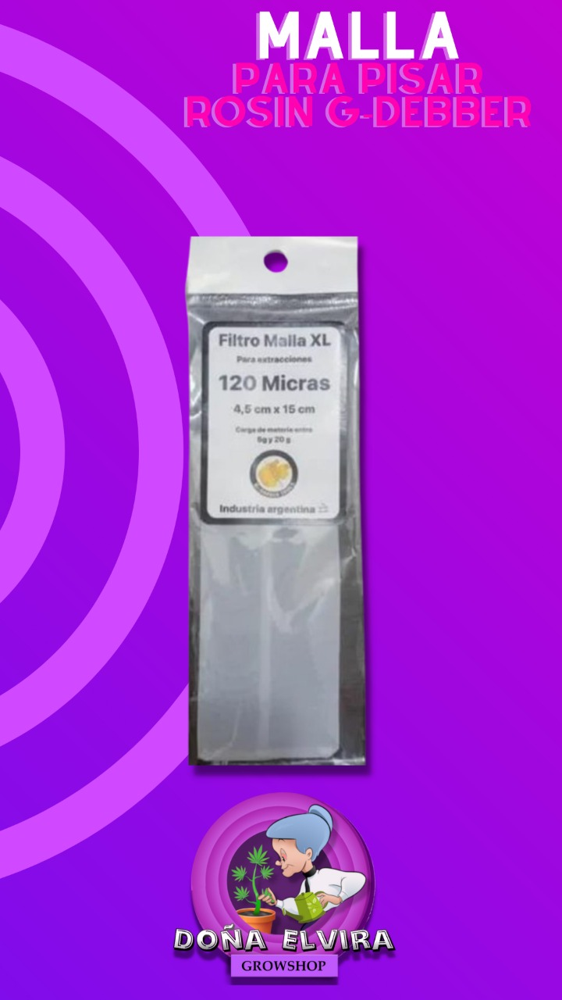
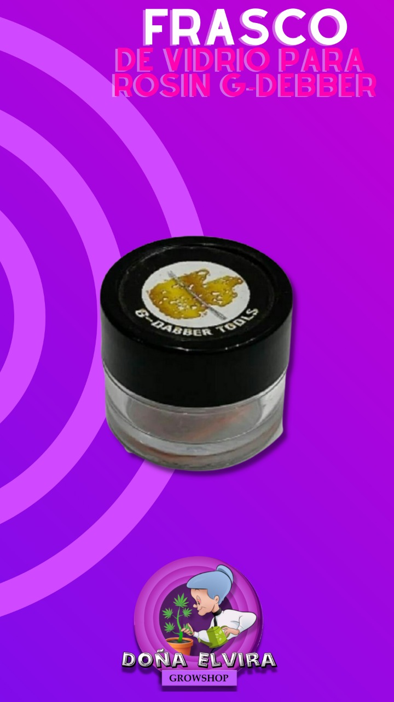

Mallas G dabber Tools
G Dabber Tools, todo Para Tus Extracciones.Filtro malla 120 micras XL para prensar rosin, hash, materia vegetal
Frasco para extracciones
Frasco Nº3 para extraccion de Rosin G- Dabber Tools
Tamaño: 8cc. Material: Vidrio
